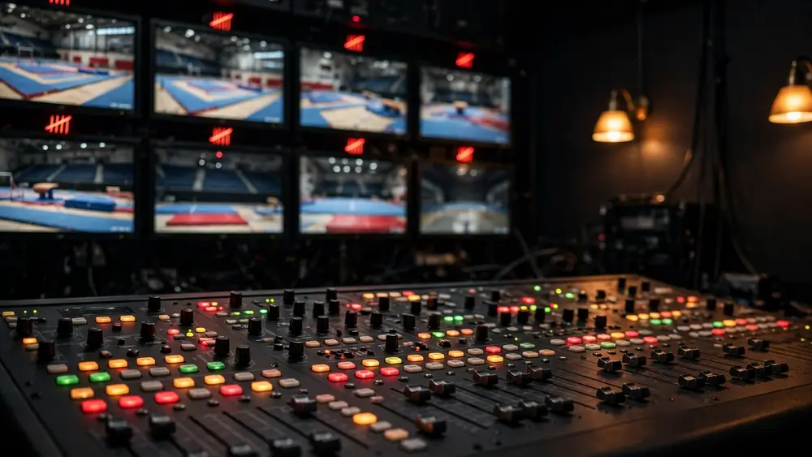
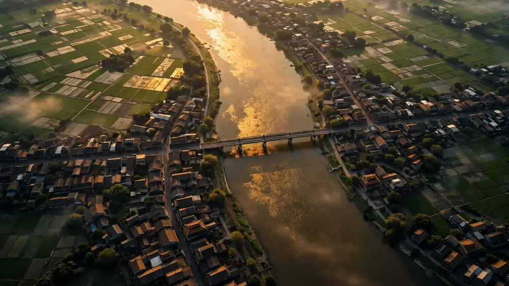
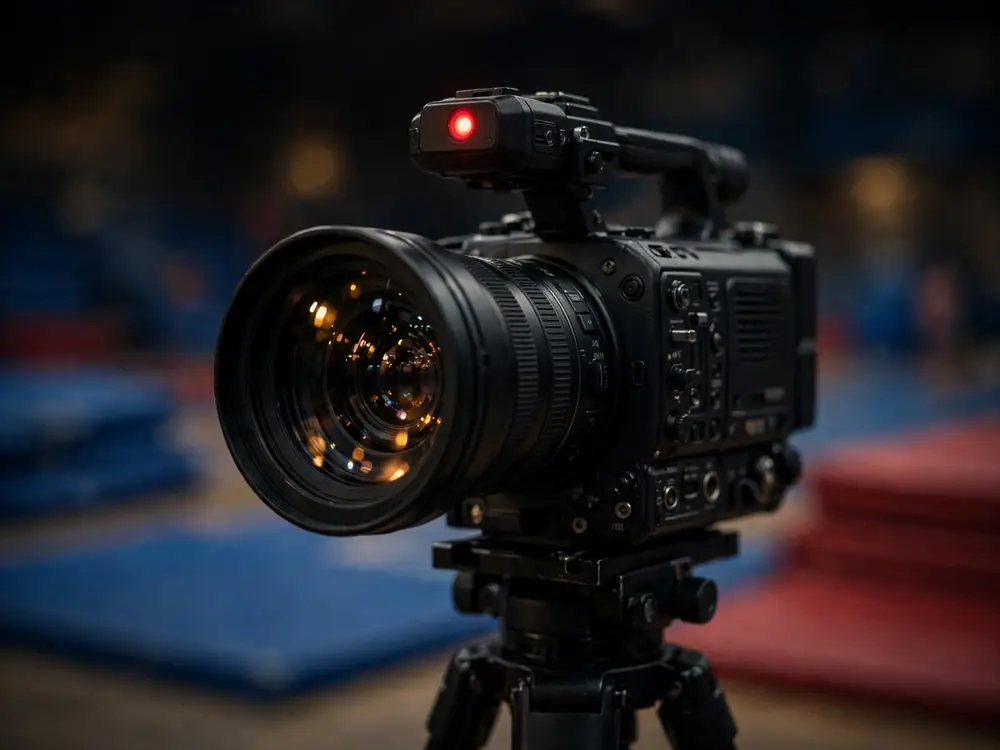

林泓丞 ｜插畫提示詞
概念「鏡頭後面的人」：電影感寫實風格，深炭色調＋暖金高光＋一點訊號紅，淺景深、膠片顆粒。8 張插畫一律場景與物件、絕不畫人臉，圖內無文字、無數字、無浮水印、無商標。每張皆已親眼驗收採用，重出 0 張。
IMG-001｜導播台多機畫面

Cinematic photorealistic wide shot of a dim broadcast control room: a large video switcher console with glowing red, amber and green buttons in the foreground, a wall of monitors behind it showing different camera angles of an indoor sports arena with blue and red mats, red tally lights glowing above each monitor, warm amber practical lamps on the right, deep charcoal shadows, shallow depth of field, subtle film grain. No people, no readable text, no numbers, no watermarks, no logos. Wide 16:9 composition.
IMG-002｜空拍機俯瞰河川城市

Cinematic photorealistic aerial view at golden hour: a drone's-eye view of a river winding through a Taiwanese town, green rice paddies on both banks, rooftops and a bridge, warm golden sunlight reflecting on the water, soft morning mist, deep charcoal-green shadows, subtle film grain. No readable text, no numbers, no watermarks, no logos. Wide 16:9 composition.
IMG-003｜專業攝影機與鏡頭特寫

Cinematic photorealistic close-up of a professional broadcast video camera on a tripod: large lens with warm golden reflections, glowing red tally light, blurred blue and red sports mats in the background, deep charcoal shadows, shallow depth of field, subtle film grain. No people, no readable text, no numbers, no watermarks, no logos. 4:3 composition.
IMG-004｜直播訊號塔與光流

Cinematic photorealistic night scene: a broadcast transmission tower on a hilltop above a city, streams of golden and red light flowing down from the tower like rivers of signal, dark blue storm clouds, city lights below, deep charcoal shadows, subtle film grain. No readable text, no numbers, no watermarks, no logos. Wide 16:9 composition.
IMG-005｜課堂示範（背影，不露臉）

Cinematic photorealistic scene in a dim university media workshop: a teacher seen only from behind, wearing a dark jacket and cap, demonstrating a professional video camera on a tripod to a small group of students whose backs are to the camera, warm amber practical lighting, deep charcoal shadows, monitors glowing softly in the background, shallow depth of field, subtle film grain. No faces visible anywhere, no readable text, no numbers, no watermarks, no logos. 4:3 composition.
IMG-006｜空手道場館空場全景

Cinematic photorealistic wide shot of an empty indoor sports arena prepared for a karate competition: a large blue and red competition mat in the center, bright overhead arena lights, rows of empty spectator seats fading into deep charcoal shadow, a camera tripod and broadcast cables at the edge of the mat, crisp clean atmosphere, subtle film grain. No people, no readable text, no numbers, no watermarks, no logos. Wide 16:9 composition.
IMG-007｜創業市集攤位夜景
Cinematic photorealistic night scene of a small startup market fair in Taiwan: rows of vendor stalls with warm string lights and glowing paper lanterns, colorful handmade goods and local products on wooden tables, deep blue-charcoal night sky, warm amber glow against cool shadows, lively but dreamy atmosphere, shallow depth of field, subtle film grain. No readable text, no numbers, no watermarks, no logos; any people are distant silhouettes with no visible faces. Wide 16:9 composition.
IMG-008｜文創手作工作台

Cinematic photorealistic close-up of a cultural-creative artisan workbench in a dim studio: hands-free still life of woodworking tools, half-finished wooden craft pieces, paint brushes in a jar, spools of thread and small ceramic pieces arranged on a worn wooden table, one warm amber desk lamp casting soft light, deep charcoal shadows, shallow depth of field, subtle film grain. No people, no faces, no readable text, no numbers, no watermarks, no logos. 4:3 composition.
JSON 陣列（逐條對應 images.json）
[
{"id":"IMG-001","file":"images/IMG-001.webp","section":"專長（大卡：運動賽事直播）","type":"illustration","ratio":"16:9","ref":"","prompt":"Cinematic photorealistic wide shot of a dim broadcast control room: a large video switcher console with glowing red, amber and green buttons in the foreground, a wall of monitors behind it showing different camera angles of an indoor sports arena with blue and red mats, red tally lights glowing above each monitor, warm amber practical lamps on the right, deep charcoal shadows, shallow depth of field, subtle film grain. No people, no readable text, no numbers, no watermarks, no logos. Wide 16:9 composition.","caption":"導播台多機畫面","alt":"概念插畫：導播室裡的切換台與多機監看螢幕"},
{"id":"IMG-002","file":"images/IMG-002.webp","section":"事蹟 2016（宜蘭市政微電影）","type":"illustration","ratio":"16:9","ref":"","prompt":"Cinematic photorealistic aerial view at golden hour: a drone's-eye view of a river winding through a Taiwanese town, green rice paddies on both banks, rooftops and a bridge, warm golden sunlight reflecting on the water, soft morning mist, deep charcoal-green shadows, subtle film grain. No readable text, no numbers, no watermarks, no logos. Wide 16:9 composition.","caption":"空拍機俯瞰河川城市","alt":"概念插畫：空拍機俯瞰河川環繞的城鎮與稻田"},
{"id":"IMG-003","file":"images/IMG-003.webp","section":"專長（專業攝影）","type":"illustration","ratio":"4:3","ref":"","prompt":"Cinematic photorealistic close-up of a professional broadcast video camera on a tripod: large lens with warm golden reflections, glowing red tally light, blurred blue and red sports mats in the background, deep charcoal shadows, shallow depth of field, subtle film grain. No people, no readable text, no numbers, no watermarks, no logos. 4:3 composition.","caption":"專業攝影機與鏡頭特寫","alt":"概念插畫：三腳架上的專業攝影機與鏡頭特寫"},
{"id":"IMG-004","file":"images/IMG-004.webp","section":"專長（網路直播）／聯絡區配圖","type":"illustration","ratio":"16:9","ref":"","prompt":"Cinematic photorealistic night scene: a broadcast transmission tower on a hilltop above a city, streams of golden and red light flowing down from the tower like rivers of signal, dark blue storm clouds, city lights below, deep charcoal shadows, subtle film grain. No readable text, no numbers, no watermarks, no logos. Wide 16:9 composition.","caption":"直播訊號塔與光流","alt":"概念插畫：夜色中山頂的訊號塔與光流"},
{"id":"IMG-005","file":"images/IMG-005.webp","section":"學經歷照片列","type":"illustration","ratio":"4:3","ref":"","prompt":"Cinematic photorealistic scene in a dim university media workshop: a teacher seen only from behind, wearing a dark jacket and cap, demonstrating a professional video camera on a tripod to a small group of students whose backs are to the camera, warm amber practical lighting, deep charcoal shadows, monitors glowing softly in the background, shallow depth of field, subtle film grain. No faces visible anywhere, no readable text, no numbers, no watermarks, no logos. 4:3 composition.","caption":"課堂示範（背影，不露臉）","alt":"概念插畫：老師從背後示範攝影機操作，學生圍在旁邊學習"},
{"id":"IMG-006","file":"images/IMG-006.webp","section":"事蹟 2020（團隊成立）","type":"illustration","ratio":"16:9","ref":"","prompt":"Cinematic photorealistic wide shot of an empty indoor sports arena prepared for a karate competition: a large blue and red competition mat in the center, bright overhead arena lights, rows of empty spectator seats fading into deep charcoal shadow, a camera tripod and broadcast cables at the edge of the mat, crisp clean atmosphere, subtle film grain. No people, no readable text, no numbers, no watermarks, no logos. Wide 16:9 composition.","caption":"空手道場館空場全景","alt":"概念插畫：空無一人的比賽場館，藍紅地墊與場邊攝影機"},
{"id":"IMG-007","file":"images/IMG-007.webp","section":"專長（網路行銷）","type":"illustration","ratio":"16:9","ref":"","prompt":"Cinematic photorealistic night scene of a small startup market fair in Taiwan: rows of vendor stalls with warm string lights and glowing paper lanterns, colorful handmade goods and local products on wooden tables, deep blue-charcoal night sky, warm amber glow against cool shadows, lively but dreamy atmosphere, shallow depth of field, subtle film grain. No readable text, no numbers, no watermarks, no logos; any people are distant silhouettes with no visible faces. Wide 16:9 composition.","caption":"創業市集攤位夜景","alt":"概念插畫：夜晚的創業市集攤位與燈籠"},
{"id":"IMG-008","file":"images/IMG-008.webp","section":"專長（文創產業管理）","type":"illustration","ratio":"4:3","ref":"","prompt":"Cinematic photorealistic close-up of a cultural-creative artisan workbench in a dim studio: hands-free still life of woodworking tools, half-finished wooden craft pieces, paint brushes in a jar, spools of thread and small ceramic pieces arranged on a worn wooden table, one warm amber desk lamp casting soft light, deep charcoal shadows, shallow depth of field, subtle film grain. No people, no faces, no readable text, no numbers, no watermarks, no logos. 4:3 composition.","caption":"文創手作工作台","alt":"概念插畫：文創手作工作台上的木雕與工具"}
]
出圖總數 8 張，重出 0 張。風格鎖定：電影感寫實、深炭色調＋暖金高光＋一點訊號紅、淺景深、膠片顆粒。真實照片與媒體縮圖不在此列，見 images.json。